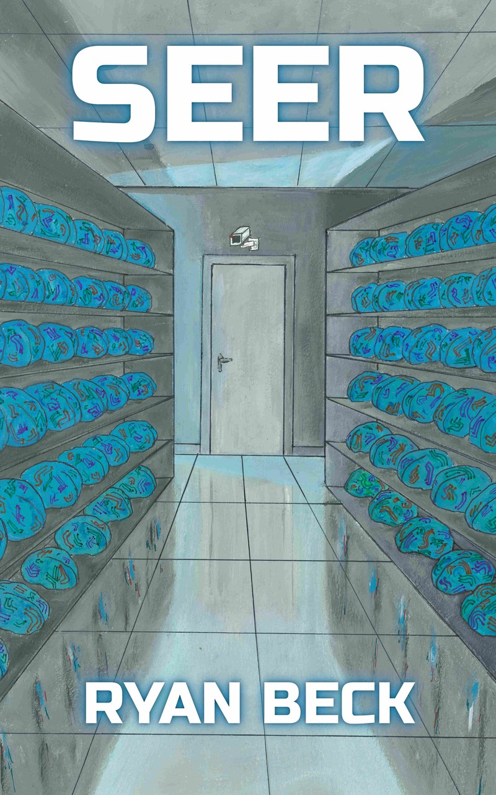
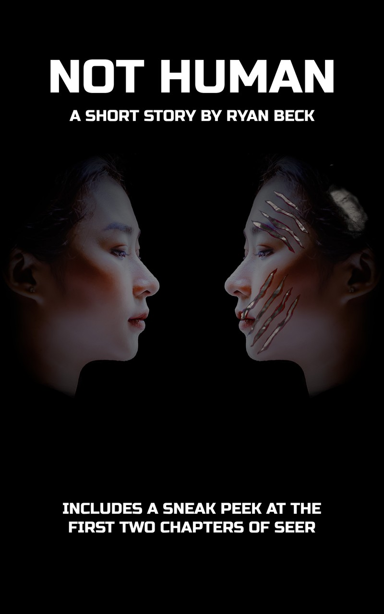

Fiction
Science fiction about the machinery we build to know ourselves, and what it costs when the machinery turns out to know us better than we do. A novel, a short story, and a standing interest in the gap between a model and the thing it claims to predict.

SEER
The future is data. All Maria has to do is think about a simple task, like turning on the lights, and it happens. It's not magic, it's SEER, the government-operated algorithm that makes life in the 22nd century so idyllic. By harvesting massive amounts of personal data, SEER can predict what a person will want the moment they want it.
It's only when she's kidnapped by a group of anti-SEER rebels that Maria learns there's more to the algorithm than she knew. SEER is not just making people's lives easier; it's being used by those in power to control the public and stamp out potential opposition. At least, that's what Vincent, the leader of the rebel group, tells her.
Vincent needs Maria's cybersecurity expertise to take SEER down. But can she trust him? Bringing down SEER could free the country from its oppressive control — or it could be an act of horrific domestic terrorism, plunging the country into chaos. Either way, associating with the rebels has already made her the target of an army of autonomous combat drones. An army that can predict what she'll do before the thought even crosses her mind.

Not Human
What makes you human? As the first person in the world to have her mind copied to a machine, Lisa may soon learn the answer. Her copy's mechanical body is stronger and more durable than bone, flesh, and blood could ever be. But the dream of roboticists and neuroscientists everywhere may turn out to be a nightmare.
Read it online, or join the list to get it in ebook and PDF — along with a preview of the first two chapters of SEER.
One email, only when there's a book
Join and I'll send you Not Human in ebook and PDF, plus the first two chapters of SEER. No schedule, no filler — you'll hear from me when there's something finished.